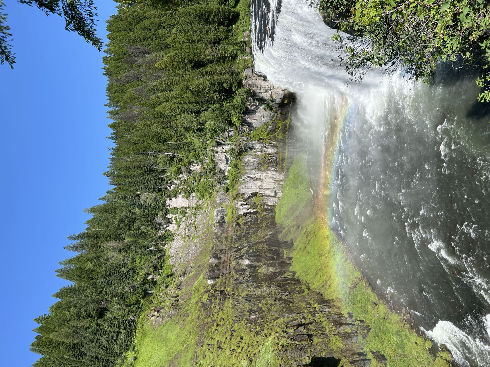
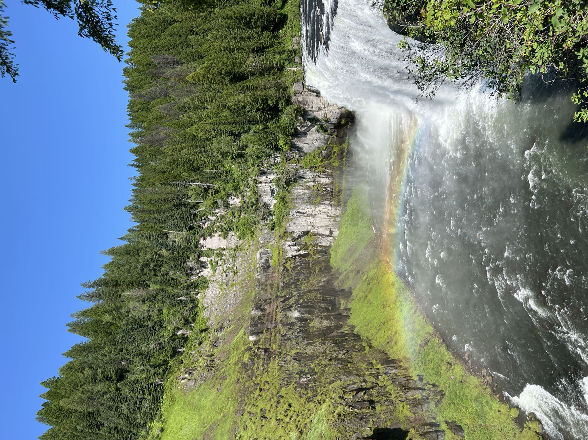

Upper Mesa Falls is a waterfall on the Henrys Fork in the
Caribou-Targhee National Forest. Upstream from Lower Mesa Falls,
it is roughly 16 miles (26 km) away from Ashton, Idaho.
I really
like the place, very beautiful with fresh air coming from the forest.
But i already see small kind of pollution.
So I imagined a very dark future for the fall due to current
environment issues. I hope it will not happen.